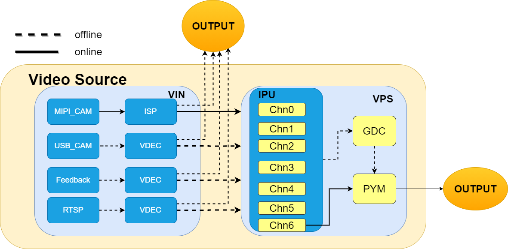

1 简介¶
video source是一套C++接口，封装了地平线xj3系统vio库的功能，支持多平台扩展，例如x3、j3、j5芯片平台。其中内部主要分为vin和vps模块，vin模块和vps模块可以单独使用，也可以组合使用。
1.1 内部框架¶
 内部主要由VIN(video input)和VPS(video process system)两大模块构成。
VIN模块主要是支持接入各种类型的视频源，输出是固定NV12格式的YUV图片。
内部使用了x3芯片中的isp、vdec解码等硬件模块。
输入源目前支持mipi camera、usb camera、image list图片列表回灌(nv12或者jpeg图片列表)、video视频回灌、rtsp client拉流等功能。当然，用户也可以在此基础上，扩展和修改自己的视频源。
mipi camera场景不仅支持hapi接口封装(推荐运行在x3平台的AIoT场景)，还支持vapi接口封装(推荐运行在j3平台的AUTO场景)，不同的接口通过选择不同的平台类型来确认
usb camera、图片列表回灌、video视频回灌、rtsp client拉流等场景，目前仅支持hapi接口，当然它们均可以运行在x3或者j3平台
VPS模块输入来自VIN的输出(NV12图像)，输出是NV12原图或者Pyramid金字塔图
输出的NV12原图来自ipu裁剪或者缩放后；金字塔图是通过PYM硬件模块的输出
内部包括IPU(image process unit)硬件模块和PYM(pyramid)硬件模块以及GDC模块(用于图像畸变矫正)
1.2 主要功能¶
video source组件支持动态视频处理和静态图片处理。
动态视频处理是异步模式获取视频源数据，保证帧率优先。另外，视频回灌则支持同步模式。
静态图片处理是同步模式获取源数据，一帧出结果后才能发送下一帧。
1.2.1 动态视频或者静态图片列表处理¶
支持单路和多路mipi camera视频获取和金字塔输出
支持单路和多路usb camera视频获取和金字塔输出
支持单路和多路回灌，支持jpeg回灌、nv12回灌、video视频回灌(AVI、MP4、H264、H265等)，内部使用decode硬件解码器，加速解码
视频回灌支持同步和异步模式。
同步模式确保数据完整性优先，不会丢帧，由用户自己通过接口控制何时生成金字塔数据
异步模式是模拟camera场景的发送，确保帧率优先，但不保证能够获取到每一帧的金字塔数据
支持单路和多路rtsp client拉流获取和金字塔输出
支持一路回灌+一路mipi camera, 或者一路rtsp client+一路usb camera，然后两路同时运行输出
支持一路camera+另外一路的视频源绑定到该camera通道，然后两路同时输出
1.2.2 静态单张图片处理¶
支持JPEG单独图片以文件路径方式读入，或者从内存读入。输出原图或者金字塔图
支持NV12图片以文件路径方式读入，或者从内存读入。输出原图或者金字塔图
1.3 使用方式¶
面对用户主要有两种使用方式：
支持组件形式单独运行输出，仅依赖系统软件相关动态库。
支持挂载到xproto总线上，以plugin插件形式使用，输出vio message推送到xproto总线。需要依赖xproto、xstream动态库、系统软件相关动态库。
2 依赖库说明¶
背景：上述两种功能依赖的库和头文件，都存放在host package压缩包中，它是随每次统一发版包输出的内容。例如host_package_1.1.0.tar.gz。
使用方式：将host_package_1.1.0.tar.gz解压到当前用户所用开发机的主目录(内部文件夹内容是.horizon文件夹，存放在~/.horizon) 。
host_package内容包括：
xstream动态库和头文件，提供AI模型集成形成workflow、策略处理和任务调度等功能
xproto动态库和头文件，提供多插件消息通信的能力
image_utils动态库和头文件，提供了c接口版本的图像处理接口(软件处理)
bpu_predict动态库和头文件，提供模型预测的能力
appsdk动态库和头文件，提供系统软件相关的能力
3 编译和运行¶
3.1 组件形式的使用¶
3.1.1 编译¶
bash make.sh
3.1.2 运行¶
编译后，会在当前目录输出output文件夹和deploy_noplugin文件夹。
output文件夹仅仅包括videosource组件本身生成的头文件、动态库以及配置文件
deploy_noplugin文件夹不仅仅包括videosource本身的相关文件，还包括测试用例和运行脚本以及可能依赖其他的动态库，可以直接部署到板端运行相关测试用例
deploy_noplugin目录下有如下内容：
.
├── bin
│ ├── video_source_sample # video source组件sample可执行文件
│ └── video_source_gtest # video source组件gtest测试用例可执行文件
├── configs
│ ├── video_source # 内部包括具体的每个video source的配置文件
│ │ └── x3dev
│ │ └── j3dev
│ ├── j3_video_source.json.mipi_cam # j3平台mipi camera相关配置(使用vapi接口)
│ ├── x3_video_source.json.fb # feedback回灌相关配置，支持单路和多路
│ ├── x3_video_source.json.mipi_cam # x3平台mipi camera相关配置(使用hapi接口)
│ ├── x3_video_source.json.multi_mix # 多路混合的视频源，例如一路camera+一路回灌;一路usb_camera+一路rtsp
│ ├── x3_video_source.json.rtsp # rtsp client拉流相关配置，支持单路和多路
│ └── x3_video_source.json.usb_cam # usb camera相关配置，支持单路和多路
├── include
│ ├── sensor_plugin # 内部是sensor插件化输出的头文件
│ ├── version.h # video source版本号
│ └── video_source # video source组件输出的头文件
│ └── video_source.h
│ └── video_source_type.h
├── lib
│ ├── ffmpeg
│ ├── libf37_plugin.so # videosource支持sensor插件化方式加载新的sensor，这里是f37 sensor参数配置库
│ ├── libimx586_plugin.so # videosource支持sensor插件化方式加载新的sensor，这里是imx586 sensor参数配置库
│ ├── libvideo_source.so # 生成的video source插件库
│ ├── README.md # sensor插件化的集成方式，参考此README说明
│ └── sensor # sensor驱动库，与具体使用的sensor相关(如果系统镜像自带驱动库，则忽略)
│ └── f37_gdc.bin
│ └── imx586_linear.so
│ └── libf37.so
│ └── libimx586.so
│ └── libjxf37_linear.so
├── image # README文档使用图片
├── README.md # video source参考使用手册
├── run_coverage_noplugin.sh # video source组件编译下代码覆盖率脚本
├── run.sh # video source组件sample运行脚本
└── run_gtest.sh # gtest测试用例运行脚本
将deploy_noplugin文件夹挂载到x3设备目录上，直接运行sh run.sh，使用交互式方式，将会看到如下提示：
set default log: [-w]
Choose lunch video source type menu...pick a combo:
1. video source type
2. image source type
Which would you like?
支持两种类型的视频源
video source type，则表示连续的视频或者静态图片列表(回灌方式)
image source type，则表示静态单张图片处理生成金字塔
会提示选择哪个视频类型，例如我们输入1，然后按enter回车键确认。
You choose 1:video source type
Choose lunch platform type menu...pick a combo:
1. x3 platform
2. j3 platform
Which would you like?
1
You choose 1:x3 platform
支持x3和j3平台
x3 platform，选择x3平台，内部将选用hapi接口，主要针对于aiot场景
j3 platform，选择j3平台，内部将选用vapi接口，主要针对于auto场景
Choose lunch video source file menu...pick a combo:
1. single camera: os8a10_2160P
2. single camera: os8a10_1080P
3. single camera: f37_1080p_1080P
4. single camera: imx586_2160p
5. single camera: imx586_1080p
6. single camera: imx327_1080p
7. single camera: usb_cam_1080P
8. single rtsp
9. 1080p image list feedback
10. 2160p image list feedback
11. 1080p video feedback
Which would you like?
1
接着需要我们选择具体用哪个视频源，我们这边选择1 (os8a10_2160P) mipi sensor为例。
1
You choose 1:os8a10_2160p
sensor is os8a10, default resolution 8M, 1080P X3 JPEG Codec...
test type: 0
video source config: ./configs/video_source/x3dev/mipi_cam/x3_mipi_cam_os8a10_2160p_chn0.json
(video_source.cc:218): =========================================================
(video_source.cc:219): VideoSource VERSION: 1.0.4 Thu May 27 16:02:47 2021
(video_source.cc:220): =========================================================
devId 0 frameDepth 10
(vps_module_hapi.cc:1540): group_id:0 vio_fps:31
(vps_module_hapi.cc:1540): group_id:0 vio_fps:31
(vps_module_hapi.cc:1540): group_id:0 vio_fps:31
(vps_module_hapi.cc:1540): group_id:0 vio_fps:31
可以看到os8a10 mipi camera运行起来了，其中会显示组号为0，fps帧率为31fps。
如果想运行其他sensor或者回灌，则按照上述方式依次类推。
3.2 插件形式的使用¶
3.2.1 编译¶
bash make.sh plugin
3.2.2 运行¶
编译后，会在当前目录输出ouput目录和deploy_plugin目录。
与组件形式编译类似，output目录仅仅包括videosource插件本身生成的头文件、动态库以及配置文件
deploy_plugin目录包括videosource插件生成的文件、测试用例以及其他依赖库，可直接部署到板端运行运行相关测试用例
deploy_plugin目录下有如下内容：
.
├── bin
│ └── video_source_plugin_sample # video source插件sample可执行文件
├── configs
│ ├── video_source # 内部包括具体的每个video source的配置文件
│ │ └── x3dev
│ │ └── j3dev
│ ├── j3_video_source.json.mipi_cam # j3平台mipi camera相关配置(使用vapi接口)
│ ├── x3_video_source.json.fb # feedback回灌相关配置，支持单路和多路
│ ├── x3_video_source.json.multi_mix # 多路混合的视频源，例如一路camera+一路回灌;一路usb_camera+一路rtsp
│ ├── x3_video_source.json.mipi_cam # x3平台mipi camera相关配置(使用hapi接口)
│ ├── x3_video_source.json.rtsp # rtsp client拉流相关配置，支持单路和多路
│ └── x3_video_source.json.usb_cam # usb camera相关配置，支持单路和多路
├── include
│ └── video_source_plugin
│ └── video_source_plugin.h # video source插件化输出的头文件
│ └── sesor_plugin
│ └──sensor_plugin.h # sensor插件化输出的头文件
│ └── version.h # video source插件形式的版本号
├── lib
│ ├── ffmpeg
│ ├── libf37_plugin.so # videosource支持sensor插件化方式加载新的sensor，这里是f37 sensor参数配置库
│ ├── libimx586_plugin.so # videosource支持sensor插件化方式加载新的sensor，这里是imx586 sensor参数配置库
│ ├── libvideo_source_plugin.so # 生成的video source插件库
│ ├── libxproto.so # 依赖外部的xproto动态库
│ ├── libxstream.so # 依赖外部的xstream动态库
│ ├── README.md # sensor插件化的集成方式，参考此README说明
│ └── sensor # sensor驱动库，与具体使用的sensor相关(如果系统镜像自带驱动库，则忽略)
│ └── f37_gdc.bin
│ └── imx586_linear.so
│ └── libf37.so
│ └── libimx586.so
│ └── libjxf37_linear.so
├── image # README文档使用图片
├── README.md # video source参考使用手册
├── run_coverage_plugin.sh # video source插件编译下代码覆盖率脚本
└── run.sh # video source插件sample运行脚本
将deploy_plugin文件夹挂载到x3设备目录上，直接运行sh run.sh，使用交互式方式，将会看到如下提示：
log_level: w
Choose lunch platform type menu...pick a combo:
1. x3 platform
2. j3 platform
Which would you like?
2
You choose 2:j3 platform
Choose lunch j3 video source type menu...pick a combo:
1. mipi camera
Which would you like?
1
You choose 1:mipi_camera
Choose lunch camera sensor menu...pick a combo:
1. mipi camera: ov10635_yuv_720p_1pipe
2. mipi camera: ov10635_yuv_720p_4pipes
3. mipi camera: ar0233_raw12_pwl_2048x_1280_1pipe
4. mipi camera: ar0233_raw12_pwl_2048x_1280_5pipes
5. mipi camera: ar0233_raw12_pwl_1080p_1pipe
6. mipi camera: ar0233_raw12_pwl_1080p_5pipes
Which would you like?
2
You choose 2:ov10635_yuv_720p_4pipes
Choose lunch run_mode menu...pick a combo:
1. start_stop_once_normal
2. start_stop_once_ut
3. start_stop_loop
Which would you like?
1
You choose 1:run mode start_stop_once_normal
video source file: ./configs/j3_video_source.json.mipi_cam
run_mode: normal
video consumer plugin start
(plugin_sample.cpp:324): start normal mode
(video_source.cc:379): =========================================================
(video_source.cc:380): VideoSource VERSION: 1.0.13 Tue Oct 26 14:58:08 2021
(video_source.cc:381): =========================================================
(vps_module_vapi.cc:313): group_id: 0 this_src_chn: 0 this_ipu_chn: 2 ipu_data_type: 2
(vps_module_vapi.cc:313): group_id: 1 this_src_chn: 1 this_ipu_chn: 2 ipu_data_type: 2
(vps_module_vapi.cc:313): group_id: 2 this_src_chn: 2 this_ipu_chn: 2 ipu_data_type: 2
(vps_module_vapi.cc:313): group_id: 3 this_src_chn: 3 this_ipu_chn: 2 ipu_data_type: 2
(vps_module_vapi.cc:406): group_id:0 vio_fps:30
(vps_module_vapi.cc:406): group_id:1 vio_fps:30
(vps_module_vapi.cc:406): group_id:3 vio_fps:31
(vps_module_vapi.cc:406): group_id:2 vio_fps:31
(vps_module_vapi.cc:406): group_id:0 vio_fps:31
(vps_module_vapi.cc:406): group_id:1 vio_fps:31
(vps_module_vapi.cc:406): group_id:3 vio_fps:31
(vps_module_vapi.cc:406): group_id:2 vio_fps:31
(vps_module_vapi.cc:406): group_id:0 vio_fps:31
(vps_module_vapi.cc:406): group_id:1 vio_fps:31
(vps_module_vapi.cc:406): group_id:3 vio_fps:31
(vps_module_vapi.cc:406): group_id:2 vio_fps:31
根据提示，选择需要的选项，然后按下enter回车键确认选择，上面可以看到在j3平台上运行了4路ov10635（group-id为0~3），vio_fps为31。
如果想运行其他sensor或者回灌，则按照上述方式依次类推。
3.3 清除¶
bash make.sh clean
上述命令将会删除生成的目录，例如build（build_plugin）目录、output目录、deploy_noplugin（deploy_plugin）目录。
3.4 图像调试¶
video source支持一些图像调试dump功能，以帮助用户在整个视频通路的各个节点去check图像是否正常。
包括sif的输出、isp的输出、ipu的输出、pym的输出、decodec的输入、decode的输出等
3.4.1 dump vinmodule输出¶
vinmoudle的输入和输出一般如下几种场景：
1. 针对mipi camera场景(x3平台)
a) vinmodule的输入，一般是sif输出的raw数据或者yuv数据、或者isp输出的nv12输出
- vpsmodule enable时，要完成sif输出，一般将vin_out_en字段设置为1，vin_vps_mode字段设置为2
- vpsmodule disbale时，要完成sif输出，一般将vin_out_en字段设置为1，vin_vps_mode字段设置为9
- 无论vpsmoudle使能与否，要完成isp输出，一般将vin_out_en字段设置为1，vin_vps_mode字段设置为1
b) vinmodule的输出，与vinmodule的输入一致，vinmodule内部不做任何处理
2. 针对mipi camera场景(j3平台)
a) j3不支持vinmodule的输入和输出，只能从从vps输出金字塔数据
3. 针对非mipi camera场景，例如usb camera、feedback、rtsp client等
a) vinmodule的输入，即上述模块的原始数据输出，例如有JPEG数据、H264数据、H265数据、YUV数据等
b) vinmodule的输出，一般是nv12数据,vinmodule内部会根据选择做解码处理
在当前运行目录下，touch vin_input.txt新建文件, 则会一直dump vinmoudle模块的输入， 一般用于dump非mipi camera场景的输入，例如usb camera源的jpeg图像
在当前运行目录下，touch vin_output.txt新建文件, 则会一直dump vinmodule模块输出, 一般用于mipi camera输出的raw或者nv12数据，或者非mipi camera场景输出的nv12数据
3.4.2 dump vpsmodule输出¶
vpsmodule的输入一般是vinmodule的输出，因此一般只需要dump vpsmodule的输出就可以
在当前运行目录下，touch vps_output.txt新建文件，则会dump vps模块输出的nv12原图数据或者金字塔图像数据
3.4.3 dump sample测试用例的输出¶
如果运行video source plugin sample测试用例 在当前运行目录下，touch pym_output.txt新建文件，则会输出consumer plugin消费插件接收的vio message，dump金字塔图像
3.4.4 指定dump文件的数量¶
如果vin_input.txt、vin_output.txt、vps_output.txt文本文件中写入20，则只会dump开始接收的20帧，写入30，则只会dump 30帧，依次类推
4 开发示例¶
4.1 配置文件说明¶
针对mipi camera场景使用说明：
如果使用的是x3芯片，board_name字段推荐配置为”x3dev”；如果使用的是j3芯片，board_name字段推荐配置为”j3dev”
x3平台和j3平台不仅是入口配置不一样，内部使用的系统接口也完全不一样，例如x3使用的是地平线系统软件hapi接口，j3使用的是系统软件vapi接口
总体来说hapi接口使用较为灵活，vapi使用较为简单，具体对比如下
hapi接口相比vapi接口有如下的优势：
hapi支持VIN和VPS单独启停；vapi不支持，整个vio通路是通过配置文件一起启动的
hapi支持isp、ipu、gdc、pym模块任意绑定，数据由用户自由控制；vapi不支持，模块的数据输出通过配置文件依次完成，虽然支持sif或者isp的数据获取(不影响主路)，但是无法对整个vio通路进行主动控制
hapi支持对ipu和pym的回灌，即满足ddr->ipu->ddr、ddr→pym→ddr；vapi不支持对ipu的回灌，仅支持对pym的回灌，ipu是offline的话，内部系统软件层进行了isp->ddr->ipu的绑定，用户无法 取出isp的输出数据(主路上)作为下一级模块的输入
hapi支持从ipu->ddr→pym→ddr的数据自动绑定； vapi不支持从ipu->ddr→pym的数据绑定，需要用户先获取ipu的输出，再主动send to pym进行处理后输出
hapi支持在整个通路中bypass一些模块，例如ipu；vapi只要使用了sif或者isp模块，一定会输出到ipu(要么isp->ipu，要么sif->ipu，无法bypass掉ipu的处理)
hapi支持gdc放入到isp之后或者放入到ipu之后进行处理； vapi仅支持gdc放入到ipu之后进行处理(因为不支持用户控制从isp->ddr->gdc->ddr->ipu的处理)
vapi接口相比hapi接口有如下的优势：
api操作使用简单，配置文件比较少(一个camera和一个vio配置)，面向硬件的控制字段基本都覆盖
有生成gdc bin文件的接口
4.1.1 video source plugin插件形式的入口配置¶
4.1.1.1 插件形式的mipi camera场景配置(x3平台)¶
{
"config_index": 0, # 选择confg_0还是config_1
"board_name": "x3dev", # x3开发平台
"config_0": {
"produce_name": "panel_camera", # 用户自定义产品对象，基于mipi_cam、usb_cam、feedback、rtsp四大基础功能
"data_type": "mono", # 使用下面的mono还是dual，mono是单路，dual是多路
"max_vio_buffer": 3, # 上层使用的最大video source buffer个数
"is_msg_package": 0, # 是否同步，1为多路同步图像到一个message，0为异步推送vio message
"mono": {
"channel_id": 0, # 用户指定通道号，用于区分不同的视频源
"video_source_file": "configs/video_source/x3dev/mipi_cam/x3_mipi_cam_os8a10_2160p_chn0.json" # video source配置文件
},
"dual": {
"channel_id": [0, 1],
"video_source_file": [
"configs/video_source/x3dev/mipi_cam/x3_mipi_cam_os8a10_2160p_chn1.json",
"configs/video_source/x3dev/mipi_cam/x3_mipi_cam_f37_1080p_chn1.json"
]
}
},
"config_1": {
"produce_name": "panel_camera",
"data_type": "mono",
"max_vio_buffer": 3,
"is_msg_package": 0,
"mono": {
"channel_id": 0,
"video_source_file": "configs/video_source/x3dev/mipi_cam/x3_mipi_cam_f37_1080p_chn0.json"
},
"dual": {
"channel_id": [0, 1],
"video_source_file": [
"configs/video_source/x3dev/mipi_cam/x3_mipi_cam_f37_1080p_chn0.json",
"configs/video_source/x3dev/mipi_cam/x3_mipi_cam_f37_1080p_chn1.json"
]
}
}
}
4.1.1.2 插件形式的mipi camera场景配置(j3平台)¶
{
"config_index": 2, # 选择confg_0还是config_1
"board_name": "j3dev", # x3开发平台
"config_0": {
"produce_name": "mipi_camera", # mipi camera场景对象
"data_source_num": 1, # 选择使用几路，需要和下面的channel_id数组的个数对齐
"channel_id": [0], # 使用第0路mipi camera
"max_vio_buffer": 3, # 上层使用的最大video source buffer个数，用于最多存放3个vio message，一般在3~5之间控制，默认是3
"is_msg_package": 0, # 用于多路中message是否同步发送
"max_ts_compare": 0, # 当该值大于0时，用于多路时间戳同步，如果两路之间时间戳差小于max_ts_compare值，则认为是同一帧
"video_source_file": "configs/video_source/j3dev/j3_mipi_cam_f37_raw10_1080p_offline_1pipe.json"
},
"config_1": {
"produce_name": "mipi_camera",
"data_source_num": 1,
"channel_id": [0],
"max_vio_buffer": 3,
"is_msg_package": 0,
"max_ts_compare": 0,
"video_source_file": "configs/video_source/j3dev/j3_mipi_cam_ov10635_yuv_720p_offline_960_4pipes.json"
},
"config_2": {
"produce_name": "mipi_camera",
"data_source_num": 4, # 最大输出能力是4路，可修改为1~4之间任意数字
"channel_id": [0, 1, 2, 3], # 指定输出4路之间的任意1路或者4路输出，例如改成[1，2], 则只输出第1路和第2路，同时上面的data_source_num改成2
"max_vio_buffer": 3,
"is_msg_package": 1,
"max_ts_compare": 0,
"video_source_file": "configs/video_source/j3dev/j3_mipi_cam_ov10635_yuv_720p_offline_960_4pipes.json"
},
"config_3": {
"produce_name": "mipi_camera",
"data_source_num": 1,
"channel_id": [2],
"max_vio_buffer": 3,
"is_msg_package": 0,
"max_ts_compare": 0,
"video_source_file": "configs/video_source/j3dev/j3_mipi_cam_ar0233_raw12_pwl_2048x1280_offline_5pipes.json"
},
"config_4": {
"produce_name": "mipi_camera",
"data_source_num": 5,
"channel_id": [0, 1, 2, 3, 4],
"max_vio_buffer": 3,
"is_msg_package": 0,
"is_msg_order": 0,
"max_ts_compare": 0,
"video_source_file": "configs/video_source/j3dev/j3_mipi_cam_ar0233_raw12_pwl_2048x1280_offline_5pipes.json"
}
}
4.1.2 video source组件形式的入口配置¶
4.1.2.1 video source组件形式的入口配置(x3平台)¶
例如x3dev/mipi_cam/x3_mipi_cam_os8a10_2160p_chn0.json
主要包括VIN和VPS两大模块的配置
{
"data_source": "mipi_cam", # 支持mipi_cam、usb_cam、feedback、rtsp四种基础功能
"channel_id": 0, # 用户自定义使用的通道号，用于区分不同的sensor
"vin_out_en": 0, # 支持vin输出的能力，默认关闭输出。如果使能，可以直接利用SDK的接口获取vin输出的nv12图片
"vps_en": 1, # vps模块是否使能，包括图像裁剪、金字塔生成，默认使能。如果关闭，vps模块则不会运行。
"config_file": {
"vin_config_file": "configs/video_source/x3dev/mipi_cam/vin/x3_vin_os8a10_2160p_chn0.json", # vin模块的配置文件
"vps_config_file": "configs/video_source/x3dev/mipi_cam/vps/x3_vps_os8a10_2160p.json" # vps模块的配置文件
}
}
a) VIN配置如下，以os8a10为例
{
"bind_chn_id": -1, # -1表示该vin模块的来源是当前自己的camera输出的数据，如果是非负数，则表示来源是其他vin模块的输出数据
"vin_vps_mode": 1, # vin vps模块的连接方式
"sensor": {
"sensor_id": 5, # sensor的枚举号
"sensor_plugin_en": 0, # 是否是插件形式导入sensor参数配置，默认关闭状态
"sensor_plugin_path": "./lib/", # sensor插件库的存放目录
"sensor_plugin_name": "os8a10_plugin", # sensor插件库的名称
"sensor_plugin_type": "linear", # sensor插件库的类型，支持linear、dol2、dol3模块，根据sensor的配置来决定
"sensor_port": 0, # sensor端口配置，默认为0
"i2c_bus": 2, # i2c总线，根据具体的硬件配置
"need_clk": 1, # 是否使用x3输出的clk供給sensor子板
"serdes_index": 0, # 使用FPD-Link线束的解串形式的sensor的索引号
"serdes_port": 0, # 解串的端口号
"extra_mode": 0 # 扩展模式，默认为0为正常模式。如果extra_mode为1，需要与bind_chn_id参数配合使用，用于输入数据来源于其他的sensor
},
"mipi": {
"host_index": 1, # mipi host索引号
"vc_index": 0, # 虚拟通道索引号
"dol2_vc_index": 1 # dol2的虚拟通道起始索引号
},
"sif": {
"need_md": 0, # 是否启用sif功能的motion detect，默认关闭
"sif_out_buf_num": 8 # sif->ddr的输出buffer个数配置
},
"isp": {
"temper_mode": 2, # 3d降噪模式等级，设置为0或者1是不使能，设置2和3分别是temper2和temper3等级，默认是temper2等级
"isp_3a_en": 1, # isp 3a功能的使能，1为打开，0为关闭，默认打开
"isp_out_buf_num": 5 # isp->ddr的输出buffer个数配置
},
"dwe": {
"ldc": {
"ldc_en": 0 # ldc模块是否使能，默认关闭
},
"dis": {
"dis_en": 0 # dis模块是否使能，默认关闭
}
}
}
补充：vin_vps_mode的说明
| 索引 | 模式| 数据流 | | ——–| —— | —— | | M0 | VIN_ONLINE_VPS_ONLINE | sif->online->isp→online→ipu | | M1 | VIN_ONLINE_VPS_OFFLINE | sif->online->isp->offline->ipu | | M2 | VIN_OFFLINE_VPS_ONLINE | sif->offline->isp->online->ipu | | M3 | VIN_OFFLINE_VPS_OFFINE | sif->offline->isp->offline->ipu | | M4 | VIN_SIF_VPS_ONLINE |sif->online->ipu | | M5 | VIN_SIF_OFFLINE_ISP_OFFLINE_VPS_ONLINE | sif->offline->isp->online→ipu 同时isp→ddr 可dump isp yuv图 | | M6 | VIN_SIF_ONLINE_DDR_ISP_DDR_VPS_ONLINE | sif->online->isp->offline→ipu 同时sif→ddr 可dump raw图 | | M7 | VIN_SIF_ONLINE_DDR_ISP_ONLINE_VPS_ONLINE | sif->online->isp->online→ipu 同时sif→ddr 可dump raw图 | | M8 | VIN_FEEDBACK_ISP_ONLINE_VPS_ONLINE | ddrin->isp->online→ipu 同时isp→ddr 可dump isp yuv图 | | M9 | VIN_SIF_OFFLINE_VPS_OFFLINE | sif->offline→ipu 多路yuv场景使用, isp disable | | M10 | VIN_SIF_OFFLINE | sif→ddr, isp enable |
b) VPS配置如下，以os8a10为例
{
"debug": {
"vps_dump_num": 0, # 是否开启vps图像dump的功能，0为不dump，大于0则是dump多少帧图像，5为5帧图像
"vps_layer_dump": 4 # dump金字塔哪一层图像，4为第4层，20为第20层，24则dump所有层使能的金字塔图像
},
"input": {
"width": 3840, # vps输入的图像分辨率，如果使能了vin模块，则应该与vin模块的输出分辨率一致
"height": 2160
},
"gdc": {
"gdc0": {
"enable": 1, # 使能gdc0模块
"gdc_type": 1, # gdc的类型，0为非法模式，1为isp->ddr->gdc，2为ipu_chn->ddr->gdc，3为pym->ddr->gdc
"frame_depth": 2, # gdc的输入buffer个数，即vps组的个数
"rotate": 0, # gdc旋转，0为不旋转，1为90度旋转，2为180度旋转，3为270度旋转
"path": "/app/bin/hapi_xj3/os8a10.bin", # gdc文件的路径
"bind_ipu_chn": -1 # 如果gdc_type为2，则这里表示绑定到ipu的哪个通道,-1表示不绑定到ipu通道
},
"gdc1": {
"enable": 0, # gdc1模块，功能与gdc0一样
"gdc_type": 2,
"frame_depth": 2,
"rotate": 0,
"path": "",
"bind_ipu_chn": -1
}
},
"ipu": {
"chn0": {
"ipu_chn_en": 0, # 使能ipu通道，图像仅经过ipu硬件
"pym_chn_en": 0, # 使能pym通道，图像经过金字塔模块
"roi_en": 0, # roi裁剪功能是否使能，ipu通道使能才有效
"roi_x": 0, # roi裁剪的左上角x坐标，ipu通道使能才有效
"roi_y": 0, # roi裁剪的左上角y坐标，ipu通道使能才有效
"roi_w": 3840, # roi裁剪的左上角roi宽度，ipu通道使能才有效
"roi_h": 2160, # roi裁剪的左上角roi高度，ipu通道使能才有效
"scale_w": 3840, # ipu输出的图像缩放宽度，ipu通道使能才有效
"scale_h": 2160, # ipu输出的图像缩放高度，ipu通道使能才有效
"frame_depth": 8, # ipu->ddr的buffer个数，ipu通道使能才有效
"timeout": 2000 # 获取ipu输出图像的超时时间
},
"chn1": {
"ipu_chn_en": 0,
"pym_chn_en": 0,
"roi_en": 0,
"roi_x": 0,
"roi_y": 0,
"roi_w": 3840,
"roi_h": 2160,
"scale_w": 3840,
"scale_h": 2160,
"frame_depth": 8,
"timeout": 2000
},
"chn2": {
"ipu_chn_en": 0,
"pym_chn_en": 0,
"roi_en": 0,
"roi_x": 0,
"roi_y": 0,
"roi_w": 3840,
"roi_h": 2160,
"scale_w": 3840,
"scale_h": 2160,
"frame_depth": 8,
"timeout": 2000
},
"chn3": {
"ipu_chn_en": 0,
"pym_chn_en": 0,
"roi_en": 0,
"roi_x": 0,
"roi_y": 0,
"roi_w": 3840,
"roi_h": 2160,
"scale_w": 3840,
"scale_h": 2160,
"frame_depth": 8,
"timeout": 2000
},
"chn4": {
"ipu_chn_en": 0,
"pym_chn_en": 0,
"roi_en": 0,
"roi_x": 0,
"roi_y": 0,
"roi_w": 3840,
"roi_h": 2160,
"scale_w": 3840,
"scale_h": 2160,
"frame_depth": 8,
"timeout": 2000
},
"chn5": {
"ipu_chn_en": 0,
"pym_chn_en": 0,
"roi_en": 0,
"roi_x": 0,
"roi_y": 0,
"roi_w": 3840,
"roi_h": 2160,
"scale_w": 3840,
"scale_h": 2160,
"frame_depth": 8,
"timeout": 2000
},
"chn6": {
"ipu_chn_en": 1,
"pym_chn_en": 1,
"roi_en": 0,
"roi_x": 0,
"roi_y": 0,
"roi_w": 3840,
"roi_h": 2160,
"scale_w": 3840,
"scale_h": 2160,
"frame_depth": 8,
"timeout": 2000
}
},
"pym": {
"pym_ctrl_config": {
"frame_id": 1, # frame_id起始帧号
"ds_layer_en": 23, # 金字塔down scale的使能金字塔层数，23则为0~23层全部使能，5为0~5层使能，有效取值为4~23
"ds_uv_bypass": 0, # 金字塔down scale uv分量bypass，默认为0则说明使用uv分量(金字塔层使能的情况下才有效)
"us_layer_en": 0, # 金字塔up scale金字塔层是否使能，默认为0关闭
"us_uv_bypass": 0, # 金字塔up scale uv分量bypass，默认为0则说明使用uv分量(金字塔层使能的情况下才有效)
"frame_depth": 5, # pym->ddr的buffer个数
"timeout": 2000 # 获取金字塔帧的超时时间
},
"pym_ds_config": {
"roi_x_1": 0, # roi 区域相对于对应基本层左顶点坐标,需为偶数
"roi_y_1": 0, # roi 区域相对于对应基本层左顶点坐标，需为偶数
"roi_w_1": 0, # roi 区域大小,不能超过基本层大小，需为偶数
"roi_h_1": 0, # roi 区域大小,不能超过基本层大小，需为偶数
"factor_1": 0, # roi 缩放系数 64/(64 + factor),factor 为0时，表示disable 该层缩放，factor 取值范围 0~63
"roi_x_2": 0,
"roi_y_2": 0,
"roi_w_2": 0,
"roi_h_2": 0,
"factor_2": 0,
"roi_x_3": 0,
"roi_y_3": 0,
"roi_w_3": 0,
"roi_h_3": 0,
"factor_3": 0,
"roi_x_5": 0,
"roi_y_5": 0,
"roi_w_5": 1920,
"roi_h_5": 1080,
"factor_5": 32,
"roi_x_6": 0,
"roi_y_6": 0,
"roi_w_6": 0,
"roi_h_6": 0,
"factor_6": 0,
"roi_x_7": 0,
"roi_y_7": 0,
"roi_w_7": 0,
"roi_h_7": 0,
"factor_7": 0,
"roi_x_9": 0,
"roi_y_9": 0,
"roi_w_9": 960,
"roi_h_9": 540,
"factor_9": 32,
"roi_x_10": 0,
"roi_y_10": 0,
"roi_w_10": 0,
"roi_h_10": 0,
"factor_10": 0,
"roi_x_11": 0,
"roi_y_11": 0,
"roi_w_11": 0,
"roi_h_11": 0,
"factor_11": 0,
"roi_x_13": 0,
"roi_y_13": 0,
"roi_w_13": 0,
"roi_h_13": 0,
"factor_13": 0,
"roi_x_14": 0,
"roi_y_14": 0,
"roi_w_14": 0,
"roi_h_14": 0,
"factor_14": 0,
"roi_x_15": 0,
"roi_y_15": 0,
"roi_w_15": 0,
"roi_h_15": 0,
"factor_15": 0,
"roi_x_17": 0,
"roi_y_17": 0,
"roi_w_17": 0,
"roi_h_17": 0,
"factor_17": 0,
"roi_x_18": 0,
"roi_y_18": 0,
"roi_w_18": 0,
"roi_h_18": 0,
"factor_18": 0,
"roi_x_19": 0,
"roi_y_19": 0,
"roi_w_19": 0,
"roi_h_19": 0,
"factor_19": 0,
"roi_x_21": 0,
"roi_y_21": 0,
"roi_w_21": 0,
"roi_h_21": 0,
"factor_21": 0,
"roi_x_22": 0,
"roi_y_22": 0,
"roi_w_22": 0,
"roi_h_22": 0,
"factor_22": 0,
"roi_x_23": 0,
"roi_y_23": 0,
"roi_w_23": 0,
"roi_h_23": 0,
"factor_23": 0
},
"pym_us_config": {
"roi_x_0": 0,
"roi_y_0": 0,
"roi_w_0": 0,
"roi_h_0": 0,
"factor_0": 0,
"roi_x_1": 0,
"roi_y_1": 0,
"roi_w_1": 0,
"roi_h_1": 0,
"factor_1": 0,
"roi_x_2": 0,
"roi_y_2": 0,
"roi_w_2": 0,
"roi_h_2": 0,
"factor_2": 0,
"roi_x_3": 0,
"roi_y_3": 0,
"roi_w_3": 0,
"roi_h_3": 0,
"factor_3": 0,
"roi_x_4": 0,
"roi_y_4": 0,
"roi_w_4": 0,
"roi_h_4": 0,
"factor_4": 0,
"roi_x_5": 0,
"roi_y_5": 0,
"roi_w_5": 0,
"roi_h_5": 0,
"factor_5": 0
}
}
}
补充：ipu通道尺寸的说明
| 通道号 | 功能 | 最大FIFO(bytes) | 分辨率(pixel) | | ——–| —— | —— | —— | | CHN0 | 缩小| 1280 | 1M | | CHN1 | 缩小| 2048 | 2M | | CHN2 | 缩小| 4096 | 8M | | CHN3 | 缩小| 2048 | 2M | | CHN4 | 缩小| 1280 | 1M | | CHN5 | 放大| 4096 | 8M | | CHN6 | 缩小| 4096 | 8M |
4.1.2.2 video source组件形式的入口配置(j3平台)¶
例如j3_mipi_cam_ar0233_raw12_pwl_2048x1280_offline_5pipes.json
{
"platform_type": "j3", # 使用j3平台，如果没有这行，内部默认是x3平台
"data_source": "mipi_cam", # mipi camera视频源
"vin_config": {
"mipi_cam": {
"cam_index": 3, # 下面cam_cfg_file配置列表文件中选用第3个配置
"cam_cfg_file": "configs/video_source/j3dev/vin/mipi_cam/hb_xj3dev_user.json" # camera的配置列表
}
},
"vps_config": {
"vio_cfg_file": "configs/video_source/j3dev/vps/ar0233_raw12_pwl_2048x1280_offline_5pipes.json", # vio配置文件列表
"gdc_en": [0, 0, 0, 0, 0], # 对应上面5路每一路的gdc使能
"bind_source_chn": [-1, 0, -1, -1, -1], # 对应每一路绑定到其他路，-1表示不绑定到其他源。例如这个例子中的0表示第1路绑定到第0路上
"ipu_chn": [1, 2, -1, -1, -1] # 对应上面5路每一路ipu使用哪个通道，值为-1则无需指定，内部会根据vio配置自动解析
}
}
a) VIN配置(j3平台mipi camera)
{
"config_number":4,
"board_name":"x3dev",
"config_0":{
"interface_type": "mipi", # 数据接口类型，目前使用的都是mipi
"deserial_num":1, # 解串器数量,实际代表子板数量，这里是1个960子板接4路
"deserial_0":{ # 如果是2个解串器，会有deserial_1的参数信息
"deserial_name":"s960", # 解串器的名字，954、960等
"deserial_addr":"0x30", # 解串器的地址
"bus_type":0, # 当前解串器所在总线类型,0为I2C
"bus_num": 1, # I2C总线号
"power_mode":0 # 上电是否可控，有的板子不需要上电，有的板子需要操作GPIO上电或者复位
},
"port_number": 4, # 表示几路sensor
"port_0":{
"dev_port":0, # 具体表示port0这一路
"bus_type":0, # 0: I2C， 1: SPI
"bus_num": 1, # I2C总线号
"entry_num": 0, # 对应mipi host rx号
"serial_addr":"0x1c", # 加串器地址
"sensor_addr":"0x40", # sensor地址
"sensor_name":"ov10635", # sensor名字
"sensor_mode": 1, # sensor模式，NORMAL_MODE = 1, DOL2_MODE=2, DOL3_MODE=3, DOL4_MODE=4, PWL_MODE = 5
"reg_width":16, # sensor的寄存器宽度
"fps":30, # sensor输出帧率
"resolution":720, # sensor输出分辨率
"deserial_index":0, # 解串器索引号，即第几个解串器
"deserial_port":0, # 解串器端口号，与port号对应
"config_path":"/etc/cam/hb_mipi_ov10635_%dfps_%dP.json" # mipi配置文件
},
"port_1":{
"dev_port":1,
"bus_type":0,
"bus_num": 1,
"entry_num": 0,
"serial_addr":"0x1d",
"sensor_addr":"0x41",
"sensor_name":"ov10635",
"sensor_mode": 1,
"reg_width":16,
"fps":30,
"resolution":720,
"deserial_index":0,
"deserial_port":1,
"config_path":"/etc/cam/hb_mipi_ov10635_%dfps_%dP.json"
},
"port_2":{
"dev_port":2,
"bus_type":0,
"bus_num": 1,
"entry_num": 0,
"serial_addr":"0x1e",
"sensor_addr":"0x42",
"sensor_name":"ov10635",
"sensor_mode": 1,
"reg_width":16,
"fps":30,
"resolution":720,
"deserial_index":0,
"deserial_port":2,
"config_path":"/etc/cam/hb_mipi_ov10635_%dfps_%dP.json"
},
"port_3":{
"dev_port":3,
"bus_type":0,
"bus_num": 1,
"entry_num": 0,
"serial_addr":"0x1f",
"sensor_addr":"0x43",
"sensor_name":"ov10635",
"sensor_mode": 1,
"reg_width":16,
"fps":30,
"resolution":720,
"deserial_index":0,
"deserial_port":3,
"config_path":"/etc/cam/hb_mipi_ov10635_%dfps_%dP.json"
},
},
"config_1":{
.....
}
}
b) VPS配置(j3平台vio)
{
"pipeline0":{
"sif": {
"input": {
"dvp": {
"enable": 0,
"hsync_inv": 0,
"vsync_inv": 1,
"width": 1280,
"height": 720,
"format": 0,
"pix_length": 2,
"enable_mux_out": 1,
"enable_frame_id": 1,
"enable_pattern": 0,
"set_init_frame_id": 100,
"set_mux_out_index": 0
},
"mipi": {
"enable": 1, # 使能mipi输入
"ipi_channels": 1, # 标识使用的内部ipi通道数目
"mipi_rx_index": 0, # 标识接入的mipi模块号
"width": 1952, # mipi 接入width匹配 sensor格式
"height": 1097, # mipi 接入height匹配 sensor格式
"format": 0, # 0 raw， 8 yuv422(只支持8 or 10 bit)
"pix_length": 2, # PIX_LEN_8 = 0, PIX_LEN_10 = 1,PIX_LEN_12 = 2,PIX_LEN_14 = 3,PIX_LEN_16 = 4
"enable_mux_out": 1, # sif 内部mux通道使能，需开启
"enable_pattern": 0, # 测试使用，是否开启sif内部的testpattern 测试数据，有sensor接入时不需要使能
"enable_frame_id": 1, # 设置frame_id从1开始累计
"enable_bypass": 0, # 使能bypass mipi host
"enable_line_shift": 0, # 使能sensor line shift dol, 普通不需要配置
"enable_id_decoder": 0, # 使能sensor id decoder dol，普通不需要配置
"set_init_frame_id": 1, # 使能frame id计数，默认建议1起始
"set_line_shift_count": 0, # sensor line shift模式下对应的设置，普通不需要
"set_bypass_channels": 1, # 设置mipi tx bypass通道
"set_mux_out_index": 0 # 该数据通路使用的内部mux号
},
"ddr_to_isp": {
"ddr_in_enable": 0, # 使能从ddr送给isp处理， 0: sif-oline-isp 1：sif-offline-isp
"ddr_in_width": 1952, # ddr in到isp的数据宽度
"ddr_in_height": 1097, # ddr in到isp的数据高度
"ddr_in_format": 0, # 目前固定raw格式，不需改动
"ddr_in_pix_length": 2, # raw的pix格式，同上
"ddr_in_buf_num": 4, # 回灌ddr in的数据buf数目，正常情况不需要配置
"ddr_raw_feedback_debug": 0 # 使能raw回灌，不与正常sensor数据以及raw dump同时工作，hb_vio_raw_feedback可使用
}
},
"output": {
"ddr": {
"ddr_output_enable" : 0, # sif ddr输出使能
"stride" : 2928, # 输出到ddr的stride的大小，raw12计算为1952*1.5
"ddr_output_buf_num": 8, # 输出到内存的buf数目，一般建议6或以上
"mux_out_enable_index": 0, # 该数据通路使用的内部mux号，对应mipi设置
"ddr_raw_dump_debug": 0 # 使能raw dump，可使用hb_vio_raw_dump进行dump，不与raw回灌同时使用
},
"isp": {
"isp_enable": 1, # 使能ISP，一般的raw格式不管都需要使能，YUV sensor 场景下可以不使能
"enable_flyby": 1, # 1: sif-online-isp 0: sif-offline-isp，多路场景下需要通过ddr in进isp进行复用的模式下需要关闭
"dol_exp_num": 1, # 曝光模式，1 为普通模式，dol 2 或者 3 设置对应数目
"enable_dgain ": 0, # ISP内部调试参数，暂可忽略
"short_maxexp_lines": 0, # 最短帧的最大曝光行数，一般是sensor mode寄存器表中找，DOL2/3需要填，用来分配IRAM大小
"medium_maxexp_lines": 0, # 普通帧的最大曝光行数，一般是sensor mode寄存器表中找，DOL3需要填，用来分配IRAM大小
"vc_short_seq":0, # 用来描述DOL2/3模式下，短帧的顺序
"vc_medium_seq":0, # 用来描述DOL3模式下，普通帧的顺序
"vc_long_seq":1, # 用来描述DOL2/3模式下，长帧的顺序
"set_dgain_short": 0, # ISP内部调试参数，暂可忽略
"set_dgain_midium": 0, # ISP内部调试参数，暂可忽略
"set_dgain_long": 0 # ISP内部调试参数，暂可忽略
},
"ipu": {
"enable_flyby" : 0 # 开启后SIF 直连到IPU，只有YUV sensor 可用，并且是单路online的yuv sensor,一般不开启*/
},
"md": {
"enable": 0, # 模块暂时未开启
"path_sel" : 0, # 0：sif-isp通路；1：sif-ipu通路
"roi_top": 0, # ROI的y坐标
"roi_left": 0, # ROI的x坐标
"roi_width": 0, # ROI的长，必须是step的整数倍
"roi_height": 0, # ROI的宽， 必须是step的整数倍
"grid_step": 0, # 对应motion detect的区域中划分的每块的宽和高。为2的整数次幂，有效范围为4~128
"grid_tolerance": 0, # 每个块前后两帧进行比较的阈值。当前后两帧中相同块进行相减，插值超过这个阈值时，判断为不同
"threshold": 0, # 动态检测选取的ROI区域中划分的块比较不同的个数超过这个阈值,发出mot_det中断
"weight_decay": 0,
# 新的一帧更新ref buffer时不是完全替代上一帧的数据，而是前后两帧加权平均的结果。Mot_det_wgt_decay为当前帧的权重，前一帧的权重为(256-mot_det_wgt_decay)
"precision": 0 # 为进行每个块计算时保留的小数点后的精度的位数，有效范围为1~4.
}
}
},
"isp": {
"sensor_mode": 1, # NORMAL_MODE = 1, DOL2_MODE=2, DOL3_MODE=3, DOL4_MODE=4, PWL_MODE = 5(压缩模式),
"cfa_pattern": 0, # BAYER_RGGB = 0, BAYER_GRBG = 1, BAYER_GBRG = 2, BAYER_BGGR = 3, MONOCHROME = 4
"bit_width": 12, # 有效值 8 10 12 14 16 20
"isp_raw_bypass": 0, # 是否bypass raw 处理，yuv格式流经时开启
"test_pattern_enable" : 0, # 内部测试数据开启
"test_pattern_type": 0, # 内部测试数据类型
"out_width": 1920, # ISP输出宽度
"out_height": 1080, # ISP输出高度
"output_dma_enable": 0, # ISP可以同时onlie 到后一级以及ddr 输出，控制是否写入ddr, (若要dump isp 数据则需要开启)
"output_format": 0, # nv12目前固定
"output_buf_num": 8, # ddr 输出的buf数目。一般建议6或以上
"isp_algo_state": 1, # 是否开启isp 3a算法工作
"calib_mode": 1, # 是否开启sensor矫正数据加载
"calib_lname": "/etc/cam/libimx327_linear.so", # 对应使用的校准库
"calib_sname": "/etc/cam/imx327_static.json", # 对应使用的校准参数
"calib_dname": "/etc/cam/imx327_dynamic.json" # 对应使用的校准参数
},
"dwe": {
"ldc": {
"ldc_enable": 0, # 1使能ldc处理， 0 bypass to ipu
"y_only": 0, # 0 YCC 420 1 only y , 不修改
"uv_mode": 0, # 0 output nv12 1 output nv21
"uv_interpolation": 0, # 0 插值 1 向左上取点
"h_blank_cycle": 32, # 给IPU 空开行数，最小32
"image_width": 1919, # 设置接入宽 -1的size, 目前ISP输出1920, 则这里设置1919
"image_height": 1079, # 设置接入高 -1的size, 目前ISP输出1080, 则这里设置1079
"y_start_addr": 524288, # iram 使用地址, 计算缓存
"c_start_addr": 786432, # iram 使用地址, 计算缓存
"line_buf" : 99, # 缓存buf line
"algo_xpara_a": 1, # 参数需要tuning
"algo_xpara_b": 1, # 参数需要tuning
"algo_ypara_a": 1, # 参数需要tuning
"algo_ypara_b": 1, # 参数需要tuning
"center_xoffset": 0, # 中心处理区域修正x偏移，0则为原图起始点开始
"center_yoffset": 0, # 中心处理区域修正y偏移，0则为原图起始点开始
"x_start": 0, # input 有效区域
"x_length": 1919, # input 有效区域
"y_start": 0, # input 有效区域
"y_length": 1079 # input 有效区域
},
"dis": {
"dis_enable": 0, # 使能dis.0则bypass
"dis_path_sel": 1, # 0 before ldc， 1 after ldc
"image_width": 1919, # 设置接入宽 -1 的size, 目前ISP输出1920, 则这里设置1919
"image_height": 1079, # 设置接入高 -1的size, 目前ISP输出1080, 则这里设置1079
"h_ratio": 65536, # 缩小比例，16小数 eg. 设置0x20000 表示缩放1/2
"v_ratio": 65536, # 缩小比例，16小数
"x_start": 0, # input crop
"x_end": 1919, # input crop
"y_start": 0, # input crop
"y_end": 1079 # input crop
}
},
"ipu": {
"ipu_config": {
"source_sel": 1, # 0为sif直连模式(yuv422)，1为ISP硬件直连模式(yuv420)，3为ddr in模式(yuv420sp)
"ds2_to_ddr_en": 0, # ds2通道支持online到pym同时也可到ddr, 开关控制是否输出到ddr
"frame_id": 1, # 设置 frame id初始值，建议从1 开始
"us_frame_id_en": 0, # 使能frame id计数，目前硬件默认开启
"ds_0_frame_id_en": 0,
"ds_1_frame_id_en": 0,
"ds_2_frame_id_en": 0,
"ds_3_frame_id_en": 0,
"ds_4_frame_id_en": 0,
"ddr_in_buf_num" : 0, # ddr in模式下输入的buf数目
"timeout": 2000, # 获取数据的超时时间
“dq_select_timeout”: 50000 # 内部线程dq IPU/PYM时的select超时时间，单位us，QEMU时需设置此字段，其他情况不用设置
},
"cfg_size": {
"source_width": 1920, # 进入ipu的数据宽度,最大4096
"source_height": 1080, # 进入ipu的数据高度，最大4096
"source_stride_y": 1920, # 进入ipu的硬件y读取stride,一般与宽相同
"source_stride_uv": 1920, # 进入ipu的硬件uv读取stride,一般与宽相同
"ipu_us_config" : {
"upscale_roi_en": 0, # 使能roi功能，若通道要输出到ddr,roi或scale必须开启一个
"us_roi_start_x": 0, # roi的x起点坐标，需要为4的倍数，并不能超过输入尺寸宽度
"us_roi_start_y": 0, # roi的y起点坐标，需要为4的倍数，并不能超过输入尺寸高度
"us_roi_width": 1920, # roi区域的宽度，需要为4的倍数，并不能超过输入尺寸宽度
"us_roi_height": 1080, # roi区域的高度，需要为4的倍数，并不能超过输入尺寸高度
"upscale_us_en": 0, # 使能scale功能
"us_tag_width": 1920, # 支持水平方向最大1.5倍放大，宽度需为4的倍数，最小32x32，最大4096, 若不使能scale则设置等于roi width */
"us_tag_height": 1080, # 支持垂直方向最大1.5倍放大, 高度需为偶数，最小32x32，最大4096, 若不使能scale则设置等于roi height */
"us_buf_num": 8 # 通道输出buf的数目
},
#
# downscale 最大输入 4096x4096, 最大输出4096x4096
# 水平方向最大缩小为原尺寸的1/8（大于1/8）
# 垂直方向最大缩小为原尺寸的1/8（大于1/8）
#
"ipu_ds_config" : [
{
"ds0_roi_en": 1, # ds roi 使能开关，若通道要输出到ddr,roi或scale必须开启一个
"ds0_roi_start_x": 0, # roi的x起点坐标，需要为4的倍数，并不能超过输入尺寸宽度
"ds0_roi_start_y": 0, # roi的y起点坐标，需要为4的倍数，并不能超过输入尺寸高度
"ds0_roi_width": 800, # roi区域的宽度，需要为4的倍数，并不能超过输入尺寸宽度
"ds0_roi_height": 480, # roi区域的高度，需要为4的倍数，并不能超过输入尺寸高度
"downscale_ds0_en": 1, # scale 使能开关
"ds0_tag_width": 800, # 水平方向最大缩小为原尺寸的1/8（大于1/8）, 最小32x32，最大4096, 若不使能scale则设置等于roi width
"ds0_tag_height": 480, # 垂直方向最大缩小为原尺寸的1/8（大于1/8）, 最小32x32，最大4096, 若不使能scale则设置等于roi height
"ds0_buf_num": 16 # 通道输出buf数目
},
{
"ds1_roi_en": 0,
"ds1_roi_start_x": 0,
"ds1_roi_start_y": 0,
"ds1_roi_width": 1280,
"ds1_roi_height": 720,
"downscale_ds1_en": 0,
"ds1_tag_width": 1280,
"ds1_tag_height": 720,
"ds1_buf_num": 8
},
{
"ds2_roi_en": 0， # 特别说明：ds2 通道可以直连到pym，同时也可以输出到ddr. 当pym 选为直连模式后，ds2的roi 或者 scale 必须开启一个，否则pym 无数据， ds2的ddr 是否输出由上面ds2_to_ddr_en 单独控制
"ds2_roi_start_x": 0,
"ds2_roi_start_y": 0,
"ds2_roi_width": 1280,
"ds2_roi_height": 720,
"downscale_ds2_en": 0,
"ds2_tag_width": 1280,
"ds2_tag_height": 720,
"ds2_buf_num": 8
},
{
"ds3_roi_en": 0,
"ds3_roi_start_x": 0,
"ds3_roi_start_y": 0,
"ds3_roi_width": 1280,
"ds3_roi_height": 720,
"downscale_ds3_en": 0,
"ds3_tag_width": 1280,
"ds3_tag_height": 720,
"ds3_buf_num": 8
},
{
"ds4_roi_en": 0,
"ds4_roi_start_x": 0,
"ds4_roi_start_y": 0,
"ds4_roi_width": 1280,
"ds4_roi_height": 720,
"downscale_ds4_en": 0,
"ds4_tag_width": 1280,
"ds4_tag_height": 720,
"ds4_buf_num": 8
}
]
}
},
"pym": {
"pym_ctrl_config": {
"img_src_sel": 0, # 0 为ddr in 模式， 1为 ipu online模式，数据从ds2接收
"frame_id": 0, # frame id起始设置
"src_w": 1280, # 输入到pym的size大小，如果是从ds2直连模式，宽需与ds2 target w相同, MAX 4096, MIN 64
"src_h": 720, # 输入到pym的size大小，如果是从ds2直连模式，宽需与ds2 target h相同, MAX 4096, MIN 64
"ds_layer_en": 24, # down scale 层数，4 ~ 24
"ds_uv_bypass": 0, # 是否 bypass 处理 uv 值
"us_layer_en": 0, # up scale 层数，0 ~ 6
"us_uv_bypass": 0, # 是否 bypass 处理 uv 值
"ddr_in_buf_num" : 6,
"output_buf_num": 8,
"timeout": 2000
},
#
# down scale 需要先知道两个概念基础层 && ROI 层：
# 基础层：为 4 * k(k 取值 0--5)层，每层缩放倍数为(1/2)^k ;
# ROI层：由基础层通过选定roi区域进行缩放得到 ;
# layer 1、2、3基于layer 0
# layer 5、6、7基于layer 4
# layer 9、10、11基于layer 8
# layer 13、14、15基于layer 12
# layer 17、18、19基于layer 16
# layer 21、22、23基于layer 20
# roi 缩放系数 64/(64 + factor),factor 为0时，表示disable 该层缩放，factor 取值范围 0--63
# target_width_y = ((roi_w - 1) * 64 / (64 + factor) +1 >> 1) << 1
# target_height_y = ((roi_h - 1) * 64 / (64 + factor) +1 >> 1) << 1
# target_width_uv = ((roi_w /2 - 1) * 64 / (64 + factor) +1 >> 1) << 1
# target_height_uv = (((roi_h /2 - 1) * 64 / (64 + factor) +1 >> 1) << 1
# 芯片限制：
# pym缩放输出最小size 48 * 32
# pym缩放输出最大size 2048 * 2048
# tag宽高向下取偶，如得到一个401 * 401的size，会向下取偶得到400 * 400
#
"pym_ds_config": {
"roi_x_1": 0, # roi 区域相对于对应基本层左顶点坐标,需为偶数
"roi_y_1": 0, # roi 区域相对于对应基本层左顶点坐标，需为偶数
"roi_w_1": 0, # roi 区域大小,不能超过基本层大小，需为偶数
"roi_h_1": 0, # roi 区域大小,不能超过基本层大小，需为偶数
"factor_1": 0,
"roi_x_2": 0,
"roi_y_2": 0,
"roi_w_2": 0,
"roi_h_2": 0,
"factor_2": 0,
。。。
"roi_x_23": 0,
"roi_y_23": 0,
"roi_w_23": 0,
"roi_h_23": 0,
"factor_23": 0
},
#
# up_scaler图层共6层，从原始图像层任意选取6个区域进行放大，目前factor 放大尺寸为固定值，即
# factor_0:50 放大 1.28倍
# factor_1:40 放大 1.6倍
# factor_2:32 放大 2倍
# factor_3:25 放大 2.56倍
# factor_4:20 放大 3.2倍
# factor_5:16 放大 4倍
# 计算：
# target_width = (((roi_w / 2 - 1) * 64 - 1) / (factor) + 1) * 2
# target_hight = (((roi_h / 2 - 1) * 64 - 1) / (factor) + 1) * 2
# MAX 4096 x 4096
#
"pym_us_config": {
"roi_x_0": 0, # roi 区域相对于对应基本层左顶点坐标,需为偶数
"roi_y_0": 0, # roi 区域相对于对应基本层左顶点坐标,需为偶数
"roi_w_0": 200, # roi 区域大小，不能超过输入大小，需为偶数
"roi_h_0": 100, # roi 区域大小, 不能超过输入大小，需为偶数
"factor_0": 50,
"roi_x_1": 0,
"roi_y_1": 0,
"roi_w_1": 0,
"roi_h_1": 0,
"factor_1": 40,
"roi_x_2": 0,
"roi_y_2": 0,
"roi_w_2": 0,
"roi_h_2": 0,
"factor_2": 32,
"roi_x_3": 0,
"roi_y_3": 0,
"roi_w_3": 0,
"roi_h_3": 0,
"factor_3": 25,
"roi_x_4": 0,
"roi_y_4": 0,
"roi_w_4": 0,
"roi_h_4": 0,
"factor_4": 20,
"roi_x_5": 0,
"roi_y_5": 0,
"roi_w_5": 0,
"roi_h_5": 0,
"factor_5": 16
}
},
#
# GDC request output width 16 align
# In 1920x1080 -0 rotate-> Out 1920x1080
# In 1920x1080 -90 rotate->Out 1088x1920
# In 1080x1920 -0 rotate-> Out 1088x1920
# In 1080x1920 -90 rotate->Out 1920x1080
#
"gdc": {
"sensor_id": 0, # 对应通路的sensor id，gdc校准文件加载依赖该id,支持0,90,180,270旋转
"output_width": 1280, # gdc处理的宽度设置
"output_height": 720, # gdc处理的高度设置
"buf_num": 8 # gdc 输出的buf数目设置
}
}
}
4.2 接口介绍¶
4.2.1 video source关键数据结构¶
video source目前仅支持以下定义的HorizonVisionPixelFormat图像类型，如果用户需要扩展，可以自行添加。
输出的图像数据结构，只有原图ImageFrame数据结构，以及金字塔PyramidFrame数据结构。
针对FrameInfo信息的说明：
channel_id是针对不同video设备而言，由用户自定义，一般从0开始，最大为7 (最大同时支持8路)
数据从进入到vin module到从vps输出，同一帧图像frame_id唯一，一直跟随这一帧数据的流向
time_stamp_字段只有video 设备是mipi camera时候才有效，它实际是硬件sif根据晶振打上去的时间
system_time_stamp_字段是linux系统的时间，它是产生原图数据时的系统时间
frame_id字段是每帧图像的序列号
针对ImageFrame原图的说明：
src_context_字段是内部的数据结构，包括原图相关的更多信息
针对PyramidFrame金字塔图的说明：
src_info_是金字塔0层的输出，一般和金字塔的输入一样
bl_ds_是双线性输出，对于x3是表示全部最大24层缩放的输出；对于j5是仅仅表示最大输出5层双线性金字塔层
gs_ds_仅仅是针对j5高斯金字塔输出而言，最大输出5层
roi_ds_是针对j5的双线性、高斯金字塔层中的roi模块
roi_us_是金字塔放大层。x3最大是6层，j5最大为1层
pym_context_和src_context_字段是内部的数据结构，包括更多的金字塔和原图信息
enum HorizonVisionPixelFormat {
kHorizonVisionPixelFormatNone = 0,
kHorizonVisionPixelFormatRaw,
kHorizonVisionPixelFormatYUY2,
kHorizonVisionPixelFormatNV12,
kHorizonVisionPixelFormatPYM,
kHorizonVisionPixelFormatJPEG = 30, // hard codec support
kHorizonVisionPixelFormatMJPEG, // hard codec support
kHorizonVisionPixelFormatH264, // hard codec support
kHorizonVisionPixelFormatH265, // hard codec support
kHorizonVisionPixelFormatMax
};
struct FrameInfo {
virtual ~FrameInfo() {}
HorizonVisionPixelFormat pixel_format_ =
HorizonVisionPixelFormat::kHorizonVisionPixelFormatNone;
uint32_t channel_id_ = 0;
uint64_t time_stamp_ = 0; // HW time stamp
// struct timeval tv_; //system time
uint64_t system_time_stamp_ = 0; // system time
uint64_t frame_id_ = 0;
};
struct ImageLevelInfo {
uint16_t width;
uint16_t height;
uint16_t stride;
uint64_t y_paddr;
uint64_t c_paddr;
uint64_t y_vaddr;
uint64_t c_vaddr;
};
// source image frame: nv12 or raw format
struct ImageFrame : public FrameInfo {
ImageFrame() {
pixel_format_ = HorizonVisionPixelFormat::kHorizonVisionPixelFormatNV12;
}
ImageLevelInfo src_info_ = { 0 };
void *src_context_ = nullptr;
};
// pyramid image frame, compatible xj3 and j5
struct PyramidFrame : public FrameInfo {
PyramidFrame() {
pixel_format_ = HorizonVisionPixelFormat::kHorizonVisionPixelFormatPYM;
}
/**
* 1. src_info is source image output for xj3 or j5.
* a) pyramid 0-layer ouput for xj3
* b) source image ouput without pyramid process for j5
* 2. bl_ds is bilinear downscale for xj3 or j5.
* a) xj3 including all bilinear base layer and roi layer.
* b) j5 only for bilinear base layer.
* 3. gs_ds is gauss downscale only for j5, including all gauss base layer
* 4. roi_ds is roi downscale only for j5, including some downscale roi layer
* which input based on either of them as follow:
* a) bilinear pyramid certain some base layer
* b) gauss pyramid certain some base layer
* c) source image.
* 5. roi_us is roi upscale for xj3 or j5.
* a) including some upscale roi layer
* which base on as well as roi_ds for j5.
* b) it is independent module for xj3.
*/
ImageLevelInfo src_info_ = { 0 };
// max bilinear layer is 24 for xj3 or 5 for j5
std::vector<ImageLevelInfo> bl_ds_;
// max gauss layer is 5 for j5
std::vector<ImageLevelInfo> gs_ds_;
// max roi downscale is 6 for j5
std::vector<ImageLevelInfo> roi_ds_;
// max roi upscale layer is 6 for xj3 or 1 for j5
std::vector<ImageLevelInfo> roi_us_;
// pyramid context for xj3 or j5
void *pym_context_ = nullptr;
// source context for j5
void *src_context_ = nullptr;
};
4.2.2 video source组件接口介绍¶
video source对象的构造函数主要有两种：
video source type类型。用户需要指定channel id号，用于在同时接入多路视频源时，区分不同的视频源，config_file是video source的入口配置
image source type类型。没有channel_id号，默认是同步获取，用户可以根据需要使用异步获取 如下是VideoSource对象对外的接口：
class VideoSource {
public:
VideoSource() = delete;
/**
* video source class. including
* -- a) mipi camera
* -- b) usb camera
* -- c) feedback(nv12 image list, jpeg image list)
* -- d) rtsp client
*/
explicit VideoSource(const int &channel_id,
const std::string &config_file);
/**
* video source class. only including
* -- a) feedback(single nv12 image or jpeg image)
*/
explicit VideoSource(const std::string &config_file,
bool is_sync_mode = true);
~VideoSource();
int Init();
int DeInit();
int Start();
int Stop();
VideoSourceType GetSourceType() { return source_type_; }
void SetLoggingLevel(VideoSourceLogLevel &log_level);
/**
* @description: Get one nv12 image frame data from diffent vin(video_input)
* module, such as mipi_cam, usb_cam, feedback, rtsp_stream and so on.
* @param[in] vin_nv12_image is nullptr
* @param[out] vin_nv12_image is shared_ptr which including image data
* @return The interface returns 0 to indicate that the function is
* successful, otherwise it indicates that the return failed.
*/
int GetVinImageFrame(OUT std::shared_ptr<ImageFrame> &nv12_image);
/**
* @description: Free one or more nv12 image frame data from vin module
* @param[in] vin_nv12_image is shared pointer being used by user
* @return The interface returns 0 to indicate that the function is
* successful, otherwise it indicates that the return failed.
*/
int FreeVinImageFrame(IN std::shared_ptr<ImageFrame> &nv12_image);
/**
* @description: Get one or more nv12 images frame data from vps(video
* processsing system) hardware module in xj3 or j5.If soc is xj3,
* image frame data is derived from ipu multi-channel ouput in vps.
* @param[in] vps_nv12_image is nullptr
* @param[out] vps_nv12_image is shared_ptr which including image data
* @return The interface returns 0 to indicate that the function is
* successful, otherwise it indicates that the return failed.
*/
int GetVpsImageFrame(OUT std::vector<std::shared_ptr<ImageFrame>>
&nv12_image_list);
/**
* @description: Free one or more nv12 image frame data from vps module
* @param[in] vps_nv12_image is shared pointer being used by user
* @return The interface returns 0 to indicate that the function is
* successful, otherwise it indicates that the return failed.
*/
int FreeVpsImageFrame(IN std::vector<std::shared_ptr<ImageFrame>>
&nv12_image_list);
/**
* @description: Get one pyramid image frame data from pyramid
* hardware module in xj3 or j5.
* @param[in] pym_image is nullptr
* @param[out] pym_image is shared_ptr which including pyramid data
* @return The interface returns 0 to indicate that the function is
* successful, otherwise it indicates that the return failed.
*/
int GetPyramidFrame(OUT std::shared_ptr<PyramidFrame> &pym_image);
/**
* @description: Free pyramid frame data from pyramid module
* @param[in] pym_image is shared pointer being used by user
* @return The interface returns 0 to indicate that the function is
* successful, otherwise it indicates that the return failed.
*/
int FreePyramidFrame(IN std::shared_ptr<PyramidFrame> &pym_image);
/**
* @description: Set sync mode to video source
*
* Attention: Only feedback video source support set sync mode
* @param[in] NONE
* @return The interface returns 0 to indicate that the function is
* successful, otherwise it indicates that the return failed.
*/
int SetSyncMode();
/**
* @description: send frame to vps in sync mode
* @param[in] vin_nv12_image is shared pointer being used by user
* @return The interface returns 0 to indicate that the function is
* successful, otherwise it indicates that the return failed.
*/
int SendFrameToVps(const std::shared_ptr<ImageFrame> &nv12_image);
bool GetVinOutEnable() { return vin_out_en_; }
bool GetVpsEnable() { return vps_en_; }
int ReadImage(IN const std::string &path,
IN const uint32_t &width, IN const uint32_t &height,
IN const HorizonVisionPixelFormat &pixel_format);
int ReadImage(IN char* data, IN const uint32_t &len,
IN const uint32_t &width, IN const uint32_t &height,
IN const HorizonVisionPixelFormat &pixel_format);
....
};
4.3 示例程序¶
4.3.1 video source type动态视频示例¶
4.3.1.1 异步模式获取结果¶
除了回灌，其他只支持异步模式。
int channel_id = 0;
auto video_source = std::make_shared<VideoSource>(channel_id, config_file);
video_source->SetLoggingLevel(level);
std::cout << "video source config: " << config_file << std::endl;
ret = video_source->Init();
if (ret) {
std::cout << "video source init failed, ret: " << ret << std::endl;
return ret;
}
ret = video_source->Start();
if (ret) {
std::cout << "video source start failed, ret: " << ret << std::endl;
return ret;
}
bool vin_out_en = video_source->GetVinOutEnable();
bool vps_en = video_source->GetVpsEnable();
while (!g_ctx.exit) {
// 1. get vin output
if (vin_out_en == true) {
std::shared_ptr<ImageFrame> vin_image = nullptr;
ret = video_source->GetVinImageFrame(vin_image);
if (ret) {
std::cout << "get vin image frame failed, ret: " << ret << std::endl;
}
ret = video_source->FreeVinImageFrame(vin_image);
if (ret) {
std::cout << "free vin image frame failed, ret: " << ret << std::endl;
}
}
// 2. get vps output
if (vps_en == true) {
std::shared_ptr<PyramidFrame> pym_image = nullptr;
ret = video_source->GetPyramidFrame(pym_image);
if (ret) {
std::cout << "get pyramid frame failed, ret: " << ret << std::endl;
}
ret = video_source->FreePyramidFrame(pym_image);
if (ret) {
std::cout << "free pyramid frame failed, ret: " << ret << std::endl;
}
}
}
std::cout << "video source sample quit\n\n" << std::endl;
ret = video_source->Stop();
if (ret) {
std::cout << "video source stop failed, ret: " << ret << std::endl;
return ret;
}
ret = video_source->DeInit();
if (ret) {
std::cout << "video source deinit failed, ret: " << ret << std::endl;
return ret;
}
注意，该config file是video source的入口配置，例如x3_mipi_cam_os8a10_1080p_chn0.json
{
"data_source": "mipi_cam",
"channel_id": 0,
"vin_out_en": 0,
"vin_frame_depth": 8,
"vps_en": 1,
"config_file": {
"vin_config_file": "configs/video_source/x3dev/mipi_cam/vin/x3_vin_os8a10_2160p_chn0.json",
"vps_config_file": "configs/video_source/x3dev/mipi_cam/vps/x3_vps_os8a10_1080p.json"
}
}
4.3.1.2 同步模式获取结果¶
这里主要是视频回灌的支持，其他视频源因为无法控制视频源的输出，因此不支持同步模式。
std::shared_ptr<ImageFrame> vin_image = nullptr;
std::vector<std::shared_ptr<ImageFrame>> ipu_image_list;
std::shared_ptr<PyramidFrame> pym_image = nullptr;
bool vin_out_en = video_source->GetVinOutEnable();
bool vps_en = video_source->GetVpsEnable();
// 1. get vin output
if (vin_out_en == true) {
ret = video_source->GetVinImageFrame(vin_image);
if (ret) {
std::cout << "get vin image frame failed, ret: " << ret << std::endl;
}
}
// 2. get vps output
if (vin_out_en == true && vps_en == true) {
// 2.1 send vin frame to vps
ret = video_source->SendFrameToVps(vin_image);
if (ret) {
std::cout << "send frame to vps failed, ret: " << ret << std::endl;
return ret;
}
// 2.3 try get ipu nv12 image frame
ret = video_source->GetVpsImageFrame(ipu_image_list);
if (ret) {
std::cout << "get vps image frame failed, ret: " << ret << std::endl;
return ret;
}
// 2.3 try get pyramid image frame
ret = video_source->GetPyramidFrame(pym_image);
if (ret) {
std::cout << "get pyramid frame failed, ret: " << ret << std::endl;
return ret;
}
}
// 3. free vin frame
if (vin_out_en == true) {
ret = video_source->FreeVinImageFrame(vin_image);
if (ret) {
std::cout << "free vin image frame failed, ret: " << ret << std::endl;
return ret;
}
}
// 4. free vps frame
if (vin_out_en == true && vps_en == true) {
ret = video_source->FreeVpsImageFrame(ipu_image_list);
if (ret) {
std::cout << "free vps image frame failed, ret: " << ret << std::endl;
}
ret = video_source->FreePyramidFrame(pym_image);
if (ret) {
std::cout << "free pyramid frame failed, ret: " << ret << std::endl;
}
}
4.3.2 image source type静态图片示例¶
auto video_source = std::make_shared<VideoSource>(config_file);
video_source->SetLoggingLevel(level);
ret = video_source->ReadImage(image_name, width, height, pixel_format);
if (ret) {
std::cout << "read image: " << image_name
<< " failed, ret: " << ret << std::endl;
return ret;
}
bool vin_out_en = video_source->GetVinOutEnable();
bool vps_en = video_source->GetVpsEnable();
// 1. get vin output
if (vin_out_en == true) {
std::shared_ptr<ImageFrame> vin_image = nullptr;
ret = video_source->GetVinImageFrame(vin_image);
if (ret) {
std::cout << "get vin image frame failed, ret: " << ret << std::endl;
return ret;
}
ret = video_source->FreeVinImageFrame(vin_image);
if (ret) {
std::cout << "free vin image frame failed, ret: " << ret << std::endl;
return ret;
}
}
// 2. get vps output
if (vps_en == true) {
std::shared_ptr<PyramidFrame> pym_image = nullptr;
ret = video_source->GetPyramidFrame(pym_image);
if (ret) {
std::cout << "get pyramid frame failed, ret: " << ret << std::endl;
return ret;
}
ret = video_source->FreePyramidFrame(pym_image);
if (ret) {
std::cout << "free pyramid frame failed, ret: " << ret << std::endl;
return ret;
}
}
注意，静态图片config_file固定使用 configs/video_source/x3dev/feedback/x3_image_feedback.json
{
"data_source": "feedback",
"vin_out_en": 1,
"vin_frame_depth": 3,
"vps_en": 1,
"config_file": {
"vps_config_file": [
// 默认提供4种VPS配置文件模板，video source组件内部会自动根据用户图像输入分辨率来选择合适的vps配置文件，无需用户指定(如果vps配置不满足用户需要，可以自己添加或者修改)
"configs/video_source/x3dev/feedback/vps/x3_vps_feedback_640_480.json",
"configs/video_source/x3dev/feedback/vps/x3_vps_feedback_720p.json",
"configs/video_source/x3dev/feedback/vps/x3_vps_feedback_1080p.json",
"configs/video_source/x3dev/feedback/vps/x3_vps_feedback_2160p.json"
]
}
}
5 videosource设计原理¶
上面的章节描述的video source层的接口和使用方式，相当于是从用户角度来阐述。
本章节将描述video source层以下的设计原理
5.1 vin module¶
vinmodule内部包括mipi_cam、usb_cam、feedback、rtsp等视频源，支持用户扩展其他视频源。内部同时集成了一个x3 decodec解码器，用于加速编码数据的解码。
5.1.1 vin module类的继承关系¶
vin module是基类, 接口Init()、DeInit()、Start()、Stop()均由子类来实现。
vin module内部由自己的VinInit()、VinDeInit()、VinStart()、VinStop()接口，主要是用于内部的buffer管理和解码器的管理。
vin module子类(各种video设备)与vinmodule基类对接的入口是InputData()函数。该接口函数是将各种类型的数据送入到vinmodule，由vinmodule来统一管理和消费。
vin module的输出是nv12格式的图像。
如下是vin module继承关系：

5.1.2 vin module初始化¶
vin module初始化采用动态加载过程。只有当vin module收到第一帧数据后，才开始进行vin modue本身的init和start操作。这种动态加载的有如下优势：
video设备在运行过程中可能会改变输出格式或者分辨率，这样整个video source系统不需要退出进程重新启动，而快速自动适配重新加载整个vin module设备，提升了系统的灵活性。
针对于rtsp源的设备，实际用户在拉流的过程中，并不需要知道所要拉流的分辨率，只有收到视频数据后，才获取到分辨率，增强了系统的实时性。
如下是vin module的初始化流程 (vps模块也采用了动态加载，跟随vin设备的输出而动态切换系统所需的参数)。

5.1.3 vin module数据流向¶
各种类型的video设备源对象(mipi camera不走该vin module模块)，在自己的接口函数中获取不同的视频数据，然后通过vin module提供的InputData()接口函数，将数据传输到vin module对象中。
在vin module对象中有一个数据缓存池，用于缓存原始的数据(例如H264、H265、JPEG或者yuv数据)，数据缓冲池buffer的最大个数在配置文件中由用户指定，默认是8个(如果8个buffer数据满了，则会自动将最前面一帧buffer的数据给drop掉)。
经过vin module内部的解码或者图像处理之后，将输出nv12图像，图像放入vin module管理的buffer队列中。
如果用户在配置文件中使能了vps模块，则数据会自动流转到vps模块进行相应的处理。如果用户没有使能vps模块，则数据将在vin module中截止。
vin module也提供了输出处理完的nv12原图的接口，供用户获取。

5.1.4 vin module buffer轮转¶
vin module内部管理使用了三种队列状态来管理frame数据。frame buffer的个数由用户在配置文件中指定。
vin module初始化后，利用ION申请vin buffer(会分配连续的物理地址和虚拟地址)，同时带地址vin Buffer的结构体都推进FreeQueue队列中。
一帧数据获取后(如果是编码数据，需要解码为nv12)，从free queue中pop出一个buffer，拷贝nv12数据到buffer中；如果使能了vps，则同时send 该frame到vps，最后将该buffer推进Done Queue队列中。
Done Queue buffer是完成数据的buffer队列，有三种情况会从该buffer队列中pop出来：
当done buffer满了后，最前面的第一帧buffer将被pop出，同时推送进FreeQueue队列中 (用户不取buffer，导致done queue满了)
检测到Free Queue的长度为空时，从Done Queue中pop最前面一帧buffer推进FreeQueue中 (用户buffer不及时释放，导致无free queue可用，而此时done queue未满)
如果上层用户主动从VIN获取数据，最前面的第一帧buffer将被pop出，同时推送进UserQueue队列中
UserQueue队列是用户正在使用的buffer状态，此时需要用户主动调用FreeVinImageFrame()函数，才会将buffer返回给free queue队列。
对于各个Queue队列的长度说明：
FreeQueue的最大长度为：用户设置的buffer数量+2
DoneQueue的最大长度为：用户设置的buffer数量+1
UserQueue的最大长度为：用户设置的buffer数量+0

5.1.5 vin module内置解码器¶
vin module内部使用了x3内部自带的硬件解码器，支持H264、H265、JPEG、MJPEG的解码，解码分辨率最大支持4K。
vin module内部的解码器支持创建多通道解码(每个通道对应一个视频源)，同一台设备JPEG/MJPEG最大支持64路；H265/H265最大支持32路；硬件是分时复用。
解码器通道采用有名管理进行统一分配和管理(支持多进程)。
5.2 vps module¶
vps模块内部包括ipu、gdc、pym三个模块。
ipu支持图像的缩小、放大、裁剪、帧率控制配置。chn0~chn4是缩小，chn5是放大，chn6是online→pym模式，输入和输出支持online和offline模式
gdc支持图像旋转、矫正、镜像功能，输入和输出必须是offline模式
pym生成金字塔图像，输入支持online和offline，输出一般是offline
如下是vps module内部硬件结构

5.2.1 vps module继承关系¶
vps module内部包括vps module继承以及VpsModuleHapi子类，其中VpsModuleHapi子类使用了系统软件的x3 Hapi接口来进行使用。

注意：
vps module同时支持扩展j3 VAPI接口以及J5接口。
vin->vps之间的数据传递是通过SendFrame接口来完成(mipi_camera设备除外)。
5.2.1 vps module group和channel说明¶
vps module在同一台设备上支持最大创建8个vps group同时运行(硬件是通过分时复用)，vps group是虚拟的概念。
vps group组号是通过有名管道进行分配和管理（支持多进程）。
vps module内部包括6个ipu channel硬件通道(chn0~chn5)，其中chn0~chn4是缩放通道(支持crop裁剪，先裁剪再缩放)，chn5是放大通道，chn6是虚拟通道(与chn2实际是同一个硬件设备，只是它是online模式到pyramid金字塔)，其余chn0~chn5均是offline模式到pyramid金字塔。
online和offline说明
online模式到金字塔含义是chn通道输出的数据直接送入金字塔模块进行处理，不经过ddr
offline模式到金字塔含义是chn通道输出的数据先写入ddr，然后再从ddr读入到金字塔进行处理
5.2.2 vps输出说明¶
vps module支持输出两种类型的数据：
ipu输出的原图数据(可能经过裁剪或者缩放)，通过GetFrame()接口获取。
pyramid输出的金字塔数据(默认基础层全开,roi层根据需要用户在配置文件中获取)，通过GetPyramidFrame()接口获取。
vps模块实际也是动态加载的，在vps配置文件中，用户可以写入一组vps配置文件，然后vps根据vin输出的分辨率，来选择合适的vps配置文件来进行动态加载，如果找不到合适vps配置文件，则会报错退出。
5.3 vin-vps场景¶
vin->vps的配置灵活多变，默认video source已经配置好，无需用户关心。而对于高阶用户，需要修改自己的vin->vps配置，需要了解此章节。
对于mipi camera设备，vin->vps可以是online，也可以是offline模式。如果是online模式，下面条件需要全部满足：
单路camera设备
如果使能isp，则必须使能ldc(镜头畸变矫正)模块
如果不使能isp，则sif可以直接online到ipu模块
如下是典型的mipi-camera的vin->vps场景的经过各个模块的数据流

对于非mipi camera设备，vin->vps之间是offline的，因为vinmodule产生的数据均先存放在buffer queue中，然后再通过send frame to vps，从ddr读入vps模块中。
下面是几种常见的vin->vps场景(实线是数据online模式，虚线是offline模式)：
第一种是典型的mipi camera模式，vin->vps支持online或者offline，vps输出支持ipu通道输出和金字塔输出
第二种是vin->vps offline模式，输出ipu chn0缩放输出和 chn5放大输出
第三种是vin->vps offline模式，vps使用了gdc进行图像畸变矫正，ipu chn2缩放输出
第四种是vin->vps offline模式，vps使用了gdc进行图像畸变矫正，pyramid金字塔输出